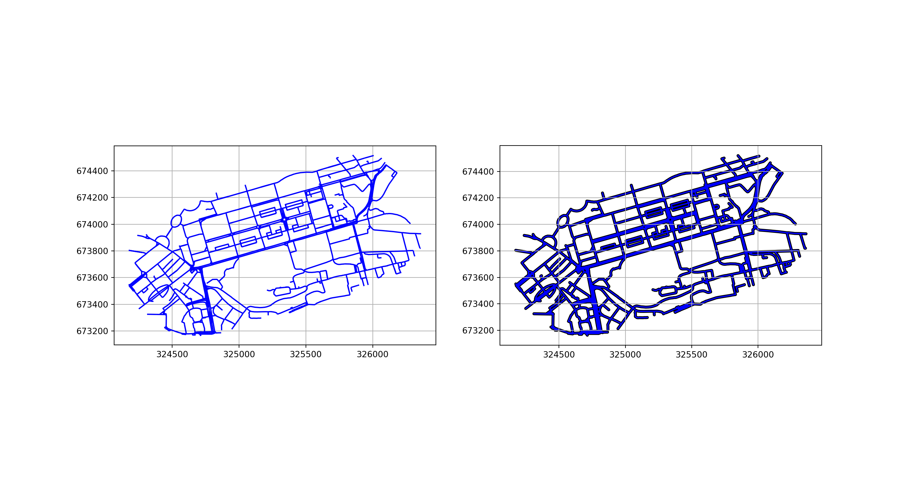

Route network simplification for transport planning
This website hosts the networkmerge paper, results of which are publicly available at https://npt.scot. It was produced with Quarto, which was also used to support the academic paper shown below. See https://quarto.org/docs/websites for further information.
The paper is re-built automatically when the source code is updated:
To contribute to the papers written as quarto documents (with .qmd extensions) like this one, we recommend using the Quarto extension for VS Code. You can go into the visual editor with the following shortcut:
Ctrl+Shift+F4
You can then add citations with Ctrl+Shift+F11 and benefit from Quarto’s other features for academic writing.
Abstract
Route network datasets are central to transport models as key inputs and outputs. The complexity of route network inputs from sources such as OpenStreetMap has increased over time, enabling more precise modelling of sustainable modes such as walking and cycling. However, this complexity can lead to problems when visualising the results of transport models, making network outputs difficult to interpret for strategic network planning and prioritisation. An example of this is the presence of multiple parallel ways on the same corridor, which can lead to visual artefacts such as incorrect flow values inferred from the corridor, potentially leading to the misinterpretation of results and investment in the wrong places. To address this problem, we present and compare two methods for simplifying route network datasets: one based on image skeletonization and the other on Voronoi diagrams. The methods have real-world applications in urban mobility and green transportation, as illustrated by the use of the simplified network results in the Transport for Scotland funded Network Planning Tool, which is publicly available at www.nptscot.scot. The methods are fully reproducible based on open data and open source software, enabling them to be freely used in other contexts and extended in the future.
1 Introduction
Datasets representing route networks are central to modern transport planning: they are used as inputs to transport models and are vital for the visualisation and interpretation of model outputs. Origin-destination, GPS, and remote sensing imagery datasets are all key inputs to transport models but are seldom the outputs of these models. Rather, outputs of these models are often estimates of costs and benefits to proposed changes to transport systems, geographic datasets at regional, local and corridors levels, or visualizations of agents on the system. However, route network datasets are ubiquitous as both transport model inputs and outputs. As inputs, they typically represent road networks. Alternatively, when provided as model outputs, they tend represent metrics such as flow per time of day and are intended to be use as an input for data visualisualization.1
This raises questions about what transport network datasets are, and how they can be optimized for more effective decision-making. An intuitive definition is that route network datasets are digital representations of footpaths, cycleways, highways and other ways (to use the OpenStreetMap terminology) along which people and goods can travel. More formally, transport network datasets must contain, at a minimum, geographic information on the coordinates of vertices (points along ways) and edges (the straight lines between vertices representing ways). Usually they also contain attributes such as the type of way, it’s characteristics (e.g. is lit at night), and the amount of traffic using each segment.
File formats for representing route networks include Transportation Network Test Problem files (TNTP and stored as a series of .tntp plain text files, examples of which can be found in github.com/bstabler/TransportationNetworks), .DAT files used by the proprietary SATURN transport modelling system and XML-based .osm or .pbf files that encode OpenStreetMap data. A more recent approach is to represent transport networks in standard geographic file formats. In this approach, used in the present paper, transport networks are represented as a series of non-overlapping linestrings, with attributes such as way type and flow. Making transport datasets compliant with the ‘simple features’ geographic data specification in this way has advantages, enabling more easier sharing of datasets between people and programs. The simple features standard is formalised by the International Organization for Standardization in ISO 19125-1:2004 and implemented in a wide range of file formats such as ESRIs shapefile, GeoJSON, and the open standard for geographic data, GeoPackage. For ease of data sharing, we share transport networks used in this paper as plain text GeoJSON files.
A problem associated with the trend towards geographic representation of route networks is increasing file sizes and complexity. With the increasing availability of high resolution imagery, citizens (e.g. via OpenStreetMap) and national mapping agencies are mapping more and more detail. Overall this is a good thing for transport planning research, but excess complexity and intricacy can lead to problems, as outlined in the next section.
The aim of this paper is to articulate the problem of complex route networks, present solutions with implementations in open source software for reproducible research, and describe applications of the methods to support more effective transport planning. Section 2 outlines the problem of complex route networks. Section 3 describes the input datasets. Section 4 presents methods for route network simplification alongside results based on the example datasets. In Section 5 we discuss the results and outline future work.
2 Prior work and problem definition
Morgan and Lovelace (2020) presented methods for combining multiple overlapping routes into a single route network with non-overlapping linestrings for visualisation, implemented in the function overline(). The approach takes overlapping linestrings representing multiple routes and combines them into a single network with non-overlapping linestrings. The approach has been used to visualise large transport networks, informing investment decisions in transport planning internationally. However, the ‘overline’ approach, without further processing, has limitations:
It does not remove redundant vertices, which can lead to large file sizes and slow rendering.
Parallel ways that are part of the same corridor are not merged into a single way, resulting in outputs that are difficult to interpret.
The final point is most relevant to the present paper. An example of the issue is shown in Figure 1 from the Propensity to Cycle Tool for England (PCT), with segment values representing daily commuter cycling potential flows (Lovelace et al. 2017). The left panel shows Otley Road with a flow value of 818 (Figure 1 (a)). The right panel, by contrast, shows three parallel ways parallel to Armley Road with flow values of 515 (shown), 288 and 47 (values not shown) (Figure 1 (b)). Although this section of Armley road has a higher cycling potential than the section of Otley Road shown (515 + 288 + 47 > 818), this is not clear from the visualisation.
(a)
(b)
Figure 1: Illustration of issues associated with route network-level results containing multiple parallel ways on the same corridor: it is not clear from the visualisation that the corridor shown in the right hand figure has greater flow than the corridor shown in the left. Source: open access Propensity to Cycle Tool results available at www.pct.bike.
A subsequent step described in the paper is to post-process the geographic representation of the transport network into a raster image, which can be used to visualise the network. The ‘rasterisation’ stage can tackle some of the issues associated with multiple parallel ways, but introduces new issues, as shown in Figure 2.
(a)
(b)
Figure 2: Rasterised network results for the same corridors shown in Figure 1. Note the visual artefacts such as ‘staircase’ effects and overlapping values resulting from parallel lines along Armley Road (right panel). Source: open access Propensity to Cycle Tool results available at www.pct.bike.
The methods presented in this paper are designed to take a complex network as an input and output a simplified network, while preserving the spatial structure of the network and relevant attributes. By reducing duplicated parallel lines and other intricacies, the outputs can enable easier-to-interpret visualisations of transport behaviour on the network patterns and behaviors.
3 Data
4 Methods
There are two main challenges that need to be overcome to simplify transport networks, in a way that preserves their value:
Simplifying the geometry
Assigning attributes to the simplified network
4.1 Simplifying the geometry
4.1.1 Topology-preserving simplification
Topology-preserving simplification reduces the number of vertices in a linestring while preserving the topology of the network. As shown in top panel of Figure 3, topology-preserving simplication can reduce the number of edges, but fails to merge parallel lines in complex geometries, as shown in the the bottom panel in Figure 3.
Figure 3: Illustration of topology-preserving simplification, using the mapshaper JavaScript package. The % values represent the “percentage of removable points to retain” argument values used in the simplification process.
The graphic below shows a 2 panel plot showing simplification with the consolidate_intersections function from the osmnx Python package.
import osmnx as ox# Get all streets within 50 m of Princes Street, Edinburgh:# Get point that is on Princes Street:# ox.geocode_to_gdf("Princes Street Edinburgh")G = ox.graph_from_place("Royal Scots Greys Memorial", network_type="walk", buffer_dist=200)ox.plot_graph(G);
# Plot the graph in an interactive map:# ox.plot_graph_folium(G)# project to 27700
import osmnx as oxG_projected = ox.project_graph(G, 'EPSG:27700')# simplify:G_simplified = ox.consolidate_intersections(G_projected, tolerance=10, rebuild_graph=True)# plot G_simplified as GeoPandas in Quarto:ox.plot_graph(G_simplified);
Figure 4: Illustration of consolidation of intersections, with the consolidate_intersections function from the osmnx Python package.
A more aggressive approach is to simplify and alter network topology in a single step, “through the removal of duplicate or parallel edges, and combining simply-connected nodes” (Deakin 2023). Two approaches to this are outlined below.
4.1.2 Network Simplification
The paper presents two approaches for network simplification: one involves image skeletonization, while the other utilizes Voronoi diagrams to identify central lines. The detailed steps of the methodology will be presented in the following sections.
4.1.3 Create a projected combined buffered geometry:
In both approaches, the network simplification process initiates with the generation of buffered geometries, achieved using the get_geometry_buffer function. A buffer size of 8 meters is selected for this purpose. These buffered geometries are essential for spatial analyses as they extend the influence area of each geometry, thereby facilitating the identification and processing of geometries that intersect or lie adjacent to each other in subsequent stages of the analysis.
from functools import partialfrom shapely import boxfrom shapely.ops import voronoi_diagramfrom shapely import boxfrom shapely.ops import voronoi_diagramimport geopandas as gpimport matplotlib.pyplot as pltfrom shapely import get_coordinates, line_merge, set_precision, unary_unionfrom shapely.geometry import MultiPoint,MultiLineString,LineString,Pointimport pandas as pdimport numpy as npplt.rcParams["figure.figsize"] = (12, 12)def get_geometry_buffer(this_gf, radius=8.0):"""get_geometry_buffer: return radius buffered GeoDataFrame args: this_gf: GeoDataFrame to radius: (default value = 8.0) returns: buffered GeoSeries geometry """ r = gp.GeoSeries(this_gf, crs=CRS).buffer(radius, join_style="round", cap_style="round") union = unary_union(r)try: r = gp.GeoSeries(union.geoms, crs=CRS)exceptAttributeError: r = gp.GeoSeries(union, crs=CRS)return rCRS ="EPSG:27700"buffer_size =8.0set_precision_pointone = partial(set_precision, grid_size=0.1)base_nx = gp.read_file("https://github.com/ropensci/stplanr/releases/download/v1.0.2/rnet_y_ed.geojson").to_crs(CRS)base_nx["geometry"] = base_nx["geometry"].map(set_precision_pointone)nx_geometry = get_geometry_buffer(base_nx["geometry"], radius=buffer_size)
The street network that requires simplification and the corresponding buffered network are presented as follows:
fig, axs = plt.subplots(1, 2, figsize=(15, 8))# Plotting the base network on the first subplotbase_nx.plot(ax=axs[0], edgecolor="blue", color="blue")axs[0].grid()# Plotting the buffered network on the second subplotnx_geometry.plot(ax=axs[1], edgecolor="black", color="blue")axs[1].grid()plt.show()

Buffered Network
Buffered Network Visualization of Edinburgh’s Princes Street
Figure 5: ?(caption)
4.1.4 Skeletonization
The buffered lines are merged to create a raster image, which is then subjected to a thinning process to yield a skeletal remnant. This remnant retains both the extent and connectivity of the original network, centered around a line that aligns with the combined buffered region. This process is demonstrated using the Sample Street Network.
Establish an affine transformation that maps the points within the buffered geometry to corresponding positions in the raster image
A scaled affine transformation is calculated to align the projected coordinate geometry with the corresponding scaled raster image.
import numpy as npimport pandas as pdimport rasterio as rioimport rasterio.features as rifdef get_pxsize(bound, scale=1.0):"""get_pxsize: calculates scaled image size in px bound: boundary corner points scale: scaling factor (default = 1.0) returns: size in px """ r = np.diff(bound.reshape(-1, 2), axis=0) r = np.ceil(r.reshape(-1))return (r[[1, 0]] * scale).astype(int)def get_affine_transform(this_gf, scale=1.0):"""get_affine_transform: return affine transformations matrices, and scaled image size from GeoPandas boundary size this_gf: GeoPanda scale: (default = 1.0) returns: rasterio and shapely affine tranformation matrices, and image size in px """ TRANSFORM_ONE = np.asarray([0.0, 1.0, -1.0, 0.0, 1.0, 1.0]) bound = this_gf.total_bounds s = TRANSFORM_ONE / scale s[[4, 5]] = bound[[0, 3]] r = s[[1, 0, 4, 3, 2, 5]] r = rio.Affine(*r)return r, s, get_pxsize(bound, scale)r_matrix, s_matrix, out_shape = get_affine_transform(nx_geometry, scale=2.0)
4.1.5 Affine transforms
The affine transformations for Rasterio and Shapely are demonstrated with a scaling factor of 2.0. The Rasterio transform applies a scale and translation in a specific order, while the Shapely transform follows a different order for scaling and rotation.
4.1.5.1 Rasterio transform
from IPython.display import display, Markdowndef display_matrix(matrix, header): r = matrix.to_markdown(index=False, headers=header) display(r)or_matrix = pd.DataFrame(np.asarray(r_matrix).reshape(-1, 3))os_matrix = pd.DataFrame(np.asarray(s_matrix).reshape(3, -1).T)display_matrix(or_matrix, " ")
In these matrices, the first two columns represent the scaling and rotation components, while the last column represents the translation. The Rasterio transform matrix first scales the coordinates by 0.5 and then translates them, whereas the Shapely transform first rotates the coordinates and then applies the scaling.
4.1.6 Skeletonize the buffer to a point geometry
A scaled affine transformation is applied to align the projected coordinate geometry with the scaled raster image. This transformation adjusts the geometry to match the raster’s scale and orientation. Following this, the raster image undergoes a cleaning process to eliminate small holes that often appear in areas where buffered lines run parallel or intersect at shallow angles. This step ensures a more coherent and accurate representation in the raster image.
The image undergoes a thinning process, yielding a skeletal raster image as the result. This skeletonized image effectively captures the essential structure and layout of the original network.
The rasterized skeletal image is then converted back into point geometry, completing the transformation process. The rasterized skeletal image is then converted back into point geometry, completing the transformation process.
The challenge with this approach is that instead of generating points situated on the simplified network, it yields a mere set of points. What is required for effective analysis is a simplified set of line geometries, not just isolated points. This necessitates the inference of line geometry from the associated set of points.
4.1.7 Transforming point geometry into line geometry
Transforming a skeletonized point set into a simplified line geometry is arguably the most complex step in creating a simplified network.
The process of transforming point geometry into line geometry involves several key steps. Initially, the point set, derived from a skeletonized image, is analysed to identify adjacent points. Adjacency is determined based on proximity within the raster coordinate system, usually within a 1x1 pixel square.
Once adjacent points are identified, line segments are created by connecting these points. The final and crucial step is the amalgamation of these individual line segments. This combination results in a continuous line geometry that represents the simplified network structure. This conversion from point to line geometry is a pivotal aspect of network simplification.
from shapely import get_coordinatesfrom shapely.geometry import LineString, MultiLineStringdef get_raster_line_with_knots(point):"""get_raster_line_with_knots: return LineString GeoSeries from 1px line points with knots args: point: 1px point GeoSeries array with knots returns: 1px line LineString GeoSeries with knots removed """ square = point.buffer(1, cap_style="square", mitre_limit=1) ix = point.sindex.query(square, predicate="covers").T ix = np.sort(ix) s = pd.DataFrame(ix).drop_duplicates().reset_index(drop=True) s = s.loc[np.where(s[0] != s[1])] s = np.stack([point[s[0].values], point[s[1].values]]).T r = gp.GeoSeries(map(LineString, s), crs=CRS) edge, node = get_source_target(combine_line(r).to_frame("geometry"))return combine_line(edge["geometry"])def get_end(geometry):"""get_end: return numpy array of geometry LineString end-points args: geometry: geometry LineString returns: end-point numpy arrays """ r = get_coordinates(geometry)return np.vstack((r[0, :], r[-1, :]))def get_source_target(line):"""get_source_target: return edge and node GeoDataFrames from LineString with unique node Point and edge source and target args: line: LineString GeoDataFrame returns: edge, node: GeoDataFrames """ edge = line.copy() r = edge["geometry"].map(get_end) r = np.stack(r) node = gp.GeoSeries(map(Point, r.reshape(-1, 2)), crs=CRS).to_frame("geometry") count = node.groupby("geometry").size().rename("count") node = node.drop_duplicates("geometry").set_index("geometry", drop=False) node = node.join(count).reset_index(drop=True).reset_index(names="node") ix = node.set_index("geometry")["node"] edge = edge.reset_index(names="edge") edge["source"] = ix.loc[map(Point, r[:, 0])].values edge["target"] = ix.loc[map(Point, r[:, 1])].valuesreturn edge, nodedef combine_line(line):"""combine_line: return LineString GeoSeries combining lines with intersecting endpoints args: line: mixed LineString GeoSeries returns: join LineString GeoSeries """ r = MultiLineString(line.values)return gp.GeoSeries(line_merge(r).geoms, crs=CRS)nx_line = get_raster_line_with_knots(nx_point)
To visualize the simplified network in its original spatial context, it is necessary to apply the reverse affine transformation. This step reverts the network back to its original coordinate system, aligning the simplified geometry with the original spatial framework.
Knots in the network often manifest as multiple short segments at intersections, resembling tangled knots.
To address these, short segments are clustered together, and a central point for each cluster is determined. The end-points of longer lines that connect to these segment clusters are then realigned to the cluster’s central point. This process effectively removes the knot-like appearance. As with previous steps, the reverse affine transformation is applied to the simplified network before plotting, ensuring the network is represented in its original spatial context.
import networkx as nxfrom shapely.geometry import MultiPointdef get_raster_line_without_knot(this_line):"""get_raster_line_without_knot: remove knots from LineString GeoSeries args: this_line: LineString GeoSeries array with knots returns: LineString GeoSeries with knots removed """ edge, node = get_source_target(this_line) ix = edge.length >2.0 connected = get_connected_class(edge.loc[~ix, ["source", "target"]]) node = node.loc[connected.index].join(connected).sort_index() connected_edge = get_centre(node) r = combine_line(pd.concat([connected_edge["geometry"], edge.loc[ix, "geometry"]]))return r[r.length >2.0]def get_connected_class(edge):"""get_connected_class: return labeled connected node pandas Series from edge list args: edge_list: source, target edge pandas DataFrame returns: labeled node pandas Series """ nx_graph = nx.from_pandas_edgelist(edge) connected = nx.connected_components(nx_graph) r = {k: i for i, j inenumerate(connected) for k in j}return pd.Series(r, name="class")def get_centre(node):"""get_centre_edge: return centroid Point from discrete node clusters args: node: discrete node cluster GeoDataSeries returns: GeoDataCentre node cluster centroid Point """ centre = node[["geometry", "class"]].groupby("class").aggregate(tuple) centre = gp.GeoSeries(centre["geometry"].map(MultiPoint), crs=CRS).centroid centre = centre.rename("target") geometry = node[["class", "geometry"]].set_index("class").join(centre) geometry = geometry.apply(LineString, axis=1) r = node.rename(columns={"node": "source"}).copy() r["geometry"] = geometry.valuesreturn rnx_line = get_raster_line_without_knot(nx_line.to_frame("geometry"))nx_output = nx_line.map(shapely_transform).map(set_precision_pointone)nx_output.plot()plt.show()
4.1.9 Primal network
There are circumstances where it might be beneficial to view a “primal” network, which is exclusively composed of direct lines connecting start and end points.
def get_nx(line):"""get_nx: return primal edge and node network from LineString GeoDataFrame args: line: LineString GeoDataFrame returns: edge, node GeoDataFrames """ r = line.map(get_end) edge = gp.GeoSeries(r.map(LineString), crs=CRS) r = np.vstack(r.to_numpy()) r = gp.GeoSeries(map(Point, r)).to_frame("geometry") r = r.groupby(r.columns.to_list(), as_index=False).size()return edge
In this approach, the network lines are first buffered as described above. The edges of these buffers are then segmented into sequences of points. From these sequences, a center-line is derived based on a set of Voronoi polygons that cover these points. This approach facilitates the creation of a simplified network representation by focusing on the central alignment of the buffered lines.
4.2.1 Boundary
The get_geometry_line funtion is defined to convert a given geometry into a simplified LineString boundary. The function first extracts the boundary of the input geometry and then simplifies it using a set tolerance level. The result is a GeoSeries of the simplified LineString, correctly aligned with a specified coordinate reference system (CRS). This functionality is particularly useful in geographic information systems (GIS) for delineating and visualizing precise boundaries of spatial objects. The code demonstrates its utility by applying the function to a geometry (nx_geometry) and visualizing the resultant simplified boundaries (nx_boundary), highlighting its practical application in spatial analysis and network simplification.
from shapely import boxfrom shapely.ops import voronoi_diagramscale =5.0tolerance=1.0def get_geometry_line(this_buffer):"""get_geometry_line: returns LineString boundary from geometry args: this_buffer: geometry to find LineString returns: simplified LineString boundary """ r = this_buffer.boundary.explode(index_parts=False).reset_index(drop=True)return gp.GeoSeries(r.simplify(tolerance=0.5), crs=CRS)nx_boundary = get_geometry_line(nx_geometry)nx_boundary.plot()plt.show()
4.2.2 Segment
The simplified LineString geometries are then broken down into shorter segments.
def get_segment_nx(line, scale):"""get_segment_nx: segment line into sections, no more than scale long args: line: line to segment scale: length to segment line returns: segmented LineStrings """ set_segment = partial(get_segment, distance=scale) r = line.map(set_segment).explode().rename("geometry")return gp.GeoDataFrame(r, crs=CRS)def get_linestring(line):"""get_linestring: return LineString GeoSeries from line coordinates args: line: returns: LineString GeoSeries """ r = get_coordinates(line) r = np.stack([gp.points_from_xy(*r[:-1].T), gp.points_from_xy(*r[1:].T)])return gp.GeoSeries(pd.DataFrame(r.T).apply(LineString, axis=1), crs=CRS).valuesdef get_segment(line, distance=50.0):"""get_segment: segment LineString GeoSeries into distance length segments args: line: GeoSeries LineString length: segmentation distance (default value = 50.0) returns: GeoSeries of LineStrings of up to length distance """return get_linestring(line.segmentize(distance))nx_segment = get_segment_nx(nx_boundary, scale).reset_index(drop=True)nx_segment.plot(edgecolor="red", linestyle='--', linewidth=1)plt.show()
4.2.3 Point
The simplified LineString geometries are converted into point geometries.
4.3 Integrating attributes from the detailed network into the simplified network
In instances where a simplified version of the network is readily available, such as OS Open Roads, the steps for network simplification can be bypassed. Instead, the focus shifts to integrating attributes from the detailed network into the simplified network. This approach streamlines the process, leveraging pre-existing simplified network data while enriching it with detailed attributes.
In this section, we focus on integrating attributes from a detailed route network into a simplified one. We achieve this using the stplanr package in R, a powerful tool designed specifically for transport planning. stplanr emphasizes spatial transport data and is particularly adept at handling non-motorized modes of transportation. More about stplanr can be found on its CRAN page [] (https://cran.r-project.org/web/packages/stplanr/index.html).
Data Preparation:
The core functionality of our integration process hinges on two pivotal inputs: rnet_x and rnet_y. Each plays a distinct yet complementary role in the network attribute integration:
rnet_x - Target Route Network: This dataset represents our base framework. It is a streamlined, simplified version of a more intricate network, serving as the foundational geometry. rnet_x is akin to a canvas, prepared to receive additional layers of data. It wroth to note that rnet_x need to contian a identifier columns.
rnet_y - Source of Additional Attributes: In contrast to rnet_x, rnet_y brings depth and detail. It is the repository of rich, comprehensive attributes that are waiting for transfer to our target network.
Step 1: Coordinate Reference System Alignment
Transform the spatial data of both rnet_x (the simplified network) and rnet_y (the detailed network) to the same coordinate reference system. For this project, we have selected EPSG:27700.
Create a function list that dictates how each attribute is to be processed:
Exclude: “geometry” from processing.
Mean Function: Applied to attributes like “Gradient” and “Quietness”. TODO expline the funtion of sum and mean
Sum Function: Used for aggregating values in columns such as “all_bicycle”.
Step 3: Using stplanr::rnet_merge for Integration
Employ the rnet_merge function from the stplanr package. This function is designed to merge route network data, taking into account the predefined functions and alignment in the coordinate system.
In the example code, four arguments need to be carefully defined:
dist (Buffer Distance): This parameter defines the buffer zone around rnet_xp in meters, essential for determining the proximity at which features from both networks are considered for merging. Typically, this value is refined to approximate the width of streets, ensuring a realistic spatial correlation between the network elements.
segment_length (Segment Maximum Length): This specifies the upper limit for each segment’s length within the detailed network, here set to 10 meters. Segmenting the network in this manner enhances manageability and contributes to more precise localization of lines within the specified buffer. This granularity is key for achieving higher accuracy in attribute integration.
funs (Function List): Comprises a series of functions assigned to process each attribute during the merge. This may involve applying statistical operations, such as calculating the mean or sum of various attributes. The choice of function for each attribute is determined based on the nature of the data and the specific analytical requirements.
max_angle_diff (Maximum Angular Difference): This parameter is crucial in regulating the maximum allowable angular deviation between segments and target lines during the merging process. With a set threshold of 20 degrees, it ensures that merging is confined to segments with similar orientations. Such consideration of angular alignment plays a pivotal role in maintaining the network’s geometric integrity. It notably helps in preventing inappropriate attribute transfers, such as avoiding the assignment of values from a road that is perpendicular to another, like in T junction scenarios. By enforcing this restriction on angular differences, the integrity and coherence of the route network’s structure are preserved, ensuring the merged network accurately reflects the true spatial layout and connectivity of the routes.
image
rnet_xp =st_transform(rnet_x, "EPSG:27700")rnet_yp =st_transform(rnet_y, "EPSG:27700")# Extract column names from the rnet_ypname_list =names(rnet_yp)# Initialize an empty listfuns =list()# Loop through each name and assign it a function based on specific conditionsfor (name in name_list) {if (name =="geometry") {next# Skip the current iteration } elseif (name %in%c("Gradient", "Quietness")) { funs[[name]] = mean } else { funs[[name]] = sum }}dist =20rnet_merged_with_angle = stplanr::rnet_merge(rnet_xp, rnet_yp, dist = dist, segment_length =10, funs = funs, max_angle_diff =20)rnet_merged_without_angle= stplanr::rnet_merge(rnet_xp, rnet_yp, dist = dist, segment_length =10, funs = funs)# Define breaks for the color scalebrks =c(0, 100, 500, 1000, 5000)# Set global tmap options for tighter marginstmap_options(outer.margins =c(0, 0, 0, 0),inner.margins =c(0, 0, 0, 0))# Create the first map with scale barm1 =tm_shape(rnet_merged_with_angle) +tm_lines("value", palette ="viridis", lwd =5, breaks = brks) +tm_scale_bar() +tm_layout(frame =FALSE, inner.margins =0, outer.margins =0, asp =0)# Create the second mapm2 =tm_shape(rnet_merged_without_angle) +tm_lines("value", palette ="viridis", lwd =5, breaks = brks) +tm_layout(frame =FALSE, inner.margins =0, outer.margins =0, asp =0)# Arrange the two maps vertically with a tight layout and synchronizationtmap_arrange(m1, m2, nrow =2, sync =TRUE)
Once we obtained the rnet_merged dataset, which is a simplified network but also contains detailed attributes, we then need a series of steps to refine the data:
Cleaning: The rnet_merged dataset undergoes an initial cleaning phase where superfluous columns are removed. This step enhances dataset manageability and focuses on relevant data by eliminating columns such as ‘identifier’ and ‘length_x’.
Dimensionality Reduction: Z and M dimensions are removed from the dataset, as they are redundant for our analysis and contribute to unnecessary increases in file size. This reduction simplifies the dataset and optimizes it for storage and processing efficiency.
NA Handling: A thorough examination is conducted for the presence of NA values across the columns. Any rows where all the targeted columns contain NA values are filtered out.
Spatial Subsetting: Following the removal of linestrings that contain NA attributes from the rnet_merged dataset, we proceed to create a geometric buffer zone. This zone serves as a spatial criterion for identifying and retaining only those geometries that lie outside of this buffer. A subset of rnet_yp, termed rnet_yp_rest, is then delineated based on this spatial relationship, effectively omitting any geometries that intersect with or fall within the buffered area. This step ensures that only those components of rnet_y which are spatially distinct from rnet_merged are retained for further consideration.
Network Simplification: In the final stage of simplification, the datasets rnet_yp_rest and rnet_merged_all are combined to form the final network, which retains the simplicity of the original simplified structure while concurrently encompassing the detailed attributes, thereby providing a comprehensive yet efficient foundation for further analysis.
By meticulously following these steps, we ensure that the integration of attributes is not only accurate but also tailored to the specific needs of our analysis.
rnet_x = gp.read_file("https://github.com/ropensci/stplanr/releases/download/v1.0.2/rnet_x_ed.geojson")rnet_y = gp.read_file("https://github.com/ropensci/stplanr/releases/download/v1.0.2/rnet_y_ed.geojson")# Plotting both GeoJSON files side by sidefig, axes = plt.subplots(1, 2, figsize=(15, 8))rnet_x.plot(ax=axes[0], color='blue')axes[0].set_title('RNet X')rnet_y.plot(ax=axes[1], color='green')axes[1].set_title('RNet Y')plt.tight_layout()plt.show()
5 Discussion
Optimisation
Packaging
6 References
# osmnx test:# import osmnx as ox# import geopandas as gpd# import momepy# import networkx as nx# import topojson as tp# gdf = gpd.read_file("https://github.com/ropensci/stplanr/releases/download/v1.0.2/rnet_y_ed.geojson")# # Convert to EPSG:27700# gdf = gdf.to_crs('EPSG:27700')# gdf.plot()# gdf_topo = tp.Topology(gdf)# gdf_simple = gdf_topo.toposimplify(10).to_gdf()# gdf_simple.plot()# # Convert gdf linestrings to nodes:# gdf_nx = momepy.gdf_to_nx(gdf, approach='dual')# nx.draw(gdf_nx)# momepy.roundabout_simplification(gdf)
# import osmnx as ox# import geopandas as gpd# import momepy# import networkx as nx# import topojson as tp# gdf = gpd.read_file('data/minimal-input.geojson')# # Convert to EPSG:27700# gdf = gdf.to_crs('EPSG:27700')# gdf.plot()# gdf_topo = tp.Topology(gdf)# gdf_simple = gdf_topo.toposimplify(10).to_gdf()# gdf_simple.plot()# # Convert gdf linestrings to nodes:# gdf_nx = momepy.gdf_to_nx(gdf, approach='dual')# nx.draw(gdf_nx)# momepy.roundabout_simplification(gdf)
References
Deakin, Will. 2023. Transport Network Simplification Through Network Disaggregation and Reassembly of OpenStreet Map (OSM) Networks. https://github.com/anisotropi4/graph.
Lovelace, Robin, Anna Goodman, Rachel Aldred, Nikolai Berkoff, Ali Abbas, and James Woodcock. 2017. “The Propensity to Cycle Tool: An Open Source Online System for Sustainable Transport Planning.”Journal of Transport and Land Use 10 (1). https://doi.org/10.5198/jtlu.2016.862.
Morgan, Malcolm, and Robin Lovelace. 2020. “Travel Flow Aggregation: Nationally Scalable Methods for Interactive and Online Visualisation of Transport Behaviour at the Road Network Level.”Environment & Planning B: Planning & Design, July. https://doi.org/10.1177/2399808320942779.
Footnotes
See the online documentation of the SUMO traffic simulation tool for an example of the wide range of data formats that transport datasets can output.↩︎